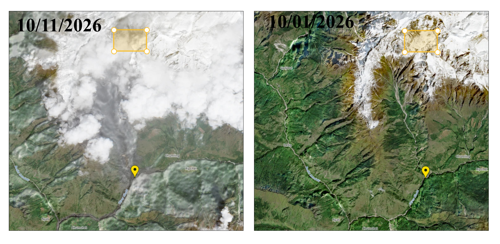
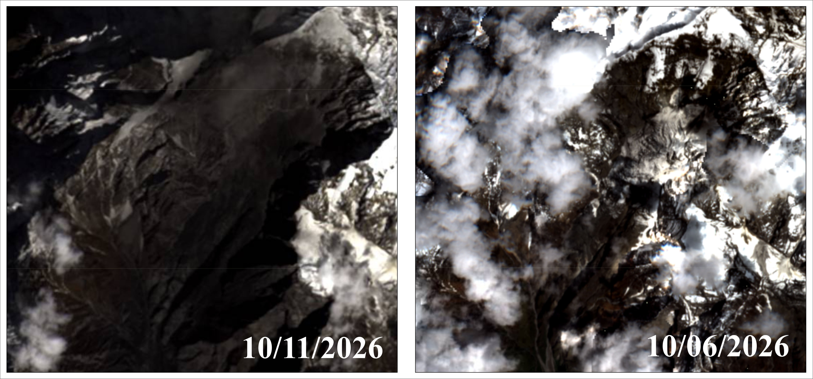

October 2026 Ice–Rock Avalanche and Budi Gandaki Debris-Flow Event, Gorkha, Nepal: Preliminary Source Identification Using Satellite Imagery
Event Overview
On 11 October 2026, at approximately 4:00 a.m. Nepal Standard Time, a major ice–rock avalanche occurred in the high Himalayan terrain near Chamar Himal in Gorkha District, Nepal. The event involved the failure of an ice and rock mass, generating a rapid downslope movement into the Udilung Khola drainage system. The displaced material subsequently propagated downstream through the Syar Khola and into the Budi Gandaki River, where it developed into a debris-flow and flood event. The resulting flow caused geomorphic changes along the affected river corridor, including channel disturbance, sediment mobilization and deposition, with impacts extending downstream. Satellite imagery acquired on 6 October (pre-event) and 13 October 2026 (post-event) clearly identifies the avalanche source area within the Tethyan Sedimentary Sequence, upstream of Udilung Khola. The event represents a cascading high-mountain hazard in which an ice–rock avalanche initiated a sequence of downstream mass-flow and flood processes within the Budi Gandaki river system.
Comparison of satellite imagery acquired on 6 October (pre-event) and 13 October 2026 (post-event) reveals the source area more clearly. The source lies within the Tethyan Sedimentary Sequence (TSS). This geological setting, combined with the high-relief Himalayan terrain, provides important context for investigating the failure and subsequent downslope movement of ice and rock.

Identification of the Avalanche Source Area
A subsequent comparison of satellite imagery acquired on 6 and 13 October 2026 provides clearer visual evidence of the ice–rock avalanche source area near Chamar Himal, upstream of Udilung Khola. The pre-event and post-event images allow the source area to be distinguished more clearly and provide a basis for investigating the changes associated with the failure.
Geological interpretation places the identified source within the Tethyan Sedimentary Sequence. This identification represents an important development in the preliminary investigation, moving the analysis beyond the initial hypothesis of a possible glacier-related source obscured by cloud cover in the earlier imagery.

Downstream Debris-Flow Processes
The downstream impacts along Udilung Khola, near Syar Khola, and within the Budi Gandaki River corridor suggest a possible cascading hazard sequence initiated by the high-mountain failure. Material mobilized at the source may have entered the drainage network and interacted with channel water and sediment, potentially contributing to the downstream debris-flow and flood processes.
The extent to which the initial avalanche transformed into a debris flow, the contribution of additional channel and hillslope material, and the mechanisms responsible for downstream propagation require further investigation. Multi-date satellite imagery, terrain analysis, and independently verified observations will be used to examine changes in the source area and along the affected river corridor.
Geological Overview
The study area lies within the tectonically active Himalayan orogenic belt, where steep topography, high relief, geological structures, and ongoing geomorphic processes influence slope stability. The identified avalanche source is situated within the Tethyan Sedimentary Sequence (TSS), a geological succession comprising sedimentary rocks that have undergone varying degrees of deformation and metamorphism.
The Tethyan Sedimentary Sequence is structurally related to the Higher Himalayan Crystalline units across the South Tibetan Detachment System (STDS), a major extensional structural system in the Himalayan orogen. The local lithology, discontinuity patterns, geological structures, and slope geometry may have influenced the stability of the source area. Their specific roles in the October 2026 failure remain to be assessed through detailed geological and geomorphological analysis.
Research Approach
The investigation uses multi-date satellite imagery to identify the source area and assess visible changes between pre-event and post-event conditions. Further work will focus on delineating the source boundary, examining the surrounding terrain, characterizing changes along the affected drainage network, and evaluating the possible relationship between the initial avalanche and downstream debris-flow processes.
Research Status
This page documents the ongoing preliminary investigation by Himalayan Geological Research (HGR). The source area is identifiable in the available satellite-image comparison, providing a stronger basis for reconstructing the event. However, quantitative estimates of the failed volume, the relative contributions of ice and rock, the precise failure mechanism, and the dynamics of downstream propagation have not yet been established by this preliminary analysis. Interpretations may be refined as additional imagery, terrain data, and independently verified observations become available.